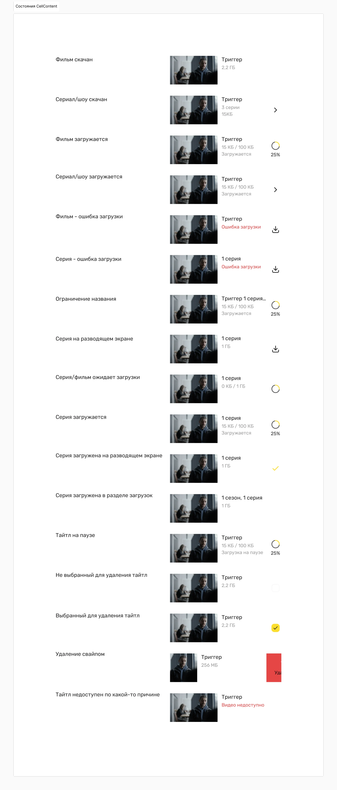

Оффлайн-режим на мобильном
Для значительной части аудитории просмотр без сети — не крайний случай, а базовое ожидание. Собрал сценарий целиком: интернет → скачал → оффлайн → просмотр.
- Роль
- Product Designer
- Период
- 2025
- Платформы
- iOS, Android
- Результат
- +8% удержание
Кому это нужно и почему
это не второстепенная функция
Сегменты, ради которых делали фичу: пользователи в дороге — транспорт и путешествия; пользователи с нестабильным интернетом; активные мобильные зрители сериалов. Для них оффлайн-режим — не дополнительная опция, а базовое ожидание от видеосервиса.
Это меняло приоритет задачи: речь шла не об удобстве меньшинства, а о работоспособности сервиса в одном из основных режимов использования.
Скачивание работало молча
Скачать эпизод было можно, но состояние процесса оставалось непрозрачным:
неясно, идет ли загрузка или остановилась, хватит ли места на устройстве, что уже
доступно без сети, а что нет.
Ошибки приходили без объяснения причины.
В результате функцией пользовались реже, чем позволял спрос — не из-за отсутствия потребности, а из-за отсутствия доверия к результату.
Индустрия автоматизировала загрузки — нам сначала нужно было их объяснить
Готовые механики оффлайна в видеосервисах развиты и хорошо описаны. Почти все они надстраиваются над процессом, которому пользователь уже доверяет — у нас недоверие и было проблемой.
- Прозрачный сценарий целиком: состояния, память, поведение без сети В работу пошла предсказуемость существующего механизма, а не новые возможности поверх него.
- Автоподкачка следующих эпизодов, как Netflix Smart Downloads Netflix удаляет просмотренный эпизод и заранее подкачивает следующий, работая только по Wi-Fi, чтобы не тратить трафик. Механика умная, но требует доверия к автоматике. Наш пользователь не понимал даже, что происходит с обычной загрузкой: автоматизировать непрозрачный процесс — усилить проблему.
- Оффлайн как привилегия старшего тарифа У Netflix Smart Downloads недоступен на рекламном тарифе — монетизация функции существует и работает. Но она предполагает, что базовый сценарий уже надежен. Продавать доступ к тому, чему не доверяют, преждевременно.
- Оставить сроки жизни загрузок в тени Отраслевой стандарт DRM: окно доступности до 30 дней, окно просмотра 48 часов с первого запуска, плюс лимит числа загрузок на устройство. Технически это данность, но как продуктовое поведение — источник худшего сценария: скачал и не успел. Значит, сроки нужно показывать таймером, а не обнаруживать по факту.
- Список загрузок без работы с памятью устройства У Netflix в загрузках видны размер каждого файла, занятое и свободное место, сортировка и предупреждение при нехватке памяти. Раздел без этих данных остается просто списком — он не отвечает на вопрос «что удалить, чтобы поместилось».
Сценарий целиком,
а не просто кнопка «скачать»
Прозрачные состояния загрузки
Очередь, прогресс, пауза, ошибка — каждое состояние показано и объяснено, включая причину, по которой загрузка не идет.
Управление местом на устройстве
Сколько занимают загрузки, что можно удалить и сколько это освободит — до того, как память закончится, а не после.
Предсказуемое поведение без сети
Без интернета видно, что доступно к просмотру прямо сейчас, а что требует подключения. Приложение перестало выглядеть сломанным при отсутствии связи.

Оффлайн-просмотр стал устойчивым сценарием использования
Фича повлияла на связку метрик, а не на одну: выросли и глубина просмотра, и частота возвратов в приложение. Это подтверждает исходную рамку — оффлайн был не удобством, а условием пользования сервисом для заметной части аудитории.